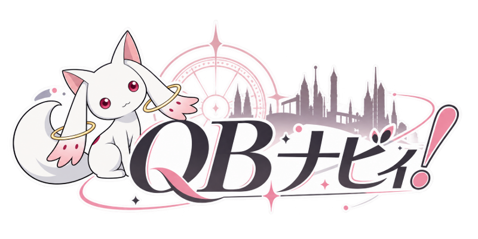

魔法少女たちといっしょに、
プレイをもっとにぎやかに。
QBナビィ！は、日常的に便利な機能に加え、「QB狩りオンライン」のプレイをサポートする機能を備えた、幅広い使い方ができるユーティリティソフトウェアです。
無料配布Windows最新版 ｖ4.17
FEATURES
QBナビィ！でできること

画面を彩る演出
吹き出しやクリティカル表示、Wave間リザルトなどを、ゲーム画面に重ねて表示します。

ゲーム情報でプレイをサポート
ゲームから得られる情報をもとに、プレイ中に役立つ表示でサポートします。

動画・音楽プレーヤー
YouTube・音楽・TVをアプリ内で再生。好きなジャンルやチャンネルも登録できます。

記録とカレンダー
キル数やスコア、獲得した武器、今日と明日の天気までまとめて確認できます。

QBナビィ！を使ってみよう
無料でダウンロードできます。
ダウンロードページへ